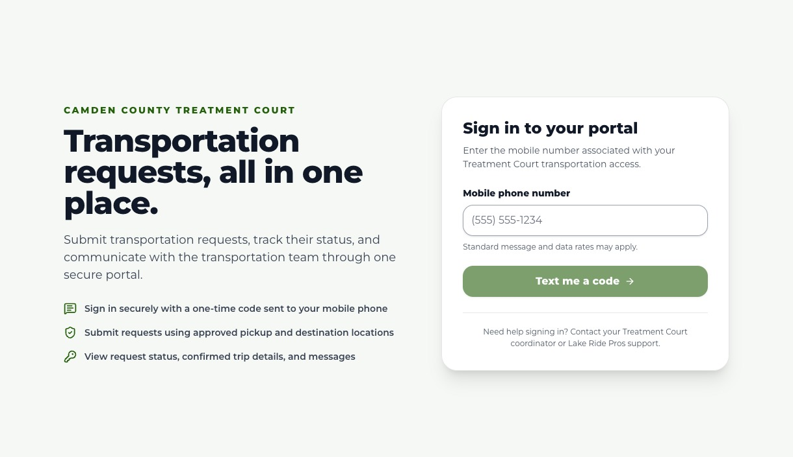
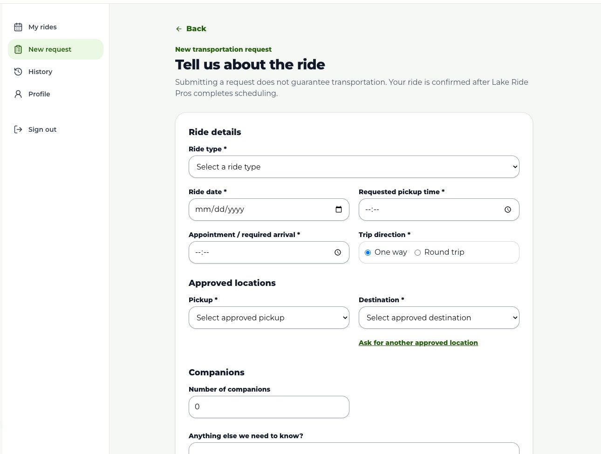
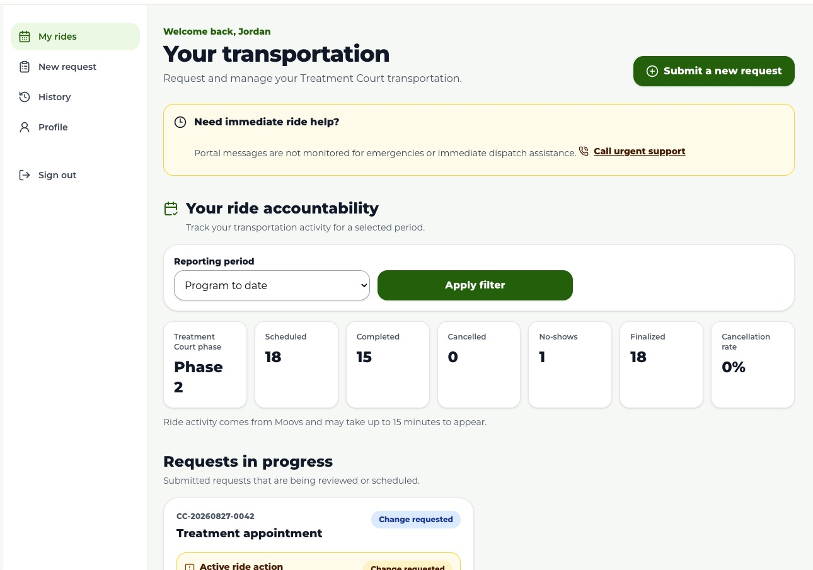
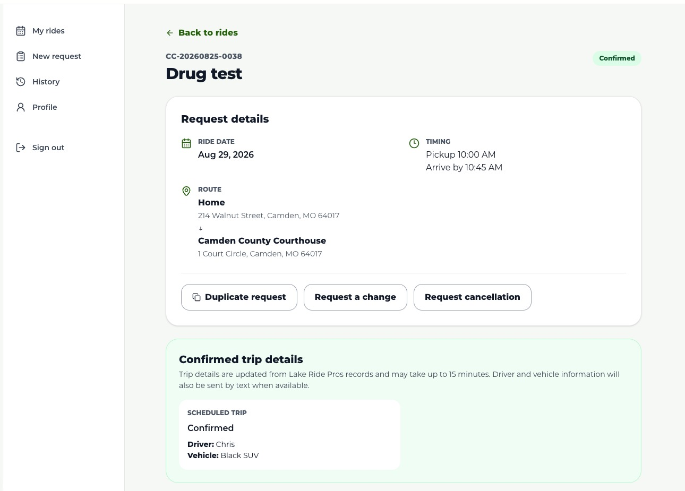
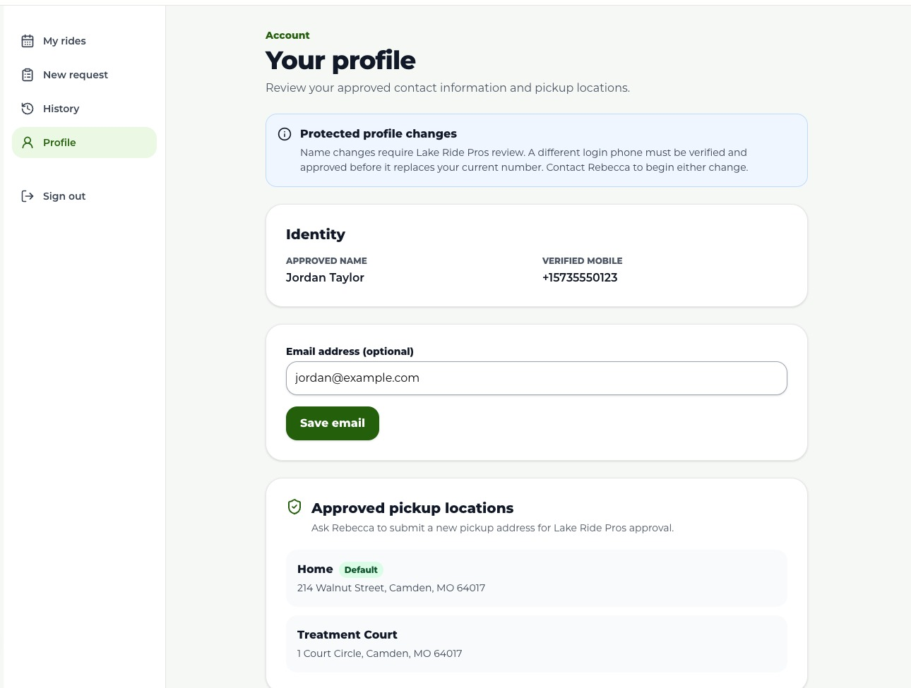

Advance notice
Read the notice shown after choosing a ride type. Some appointments may require advance notice. Same-day drug-test requests may be allowed, but they are not guaranteed.

Participant How-To Guide
A simple, step-by-step guide to signing in, submitting transportation requests, checking confirmation details, and asking for a change or cancellation.
Open the participant portallakeridepros.com/camden-county
Updated
August 2026
Lake Ride ProsNo password is needed. Portal access works only for mobile numbers approved for the Camden County transportation program.

1 2Example screen. Enter the same mobile number that was approved for your participant profile.
Use the number connected to your Treatment Court transportation access.
A six-digit, one-time sign-in code will arrive by SMS.
If it expires or never arrives, complete the security check and request a new one.
Before your first request, review and accept the current notice, location, change, and cancellation rules.
Can’t sign in? Recheck the phone number first. Unknown or unapproved numbers cannot create their own account. Contact your Treatment Court coordinator or Lake Ride Pros for help.
Lake Ride ProsFrom My rides, select Submit a new request — or choose New request in the menu.

1 2 3Example screen. Your actual ride types and approved locations may be different.
Important: Submitting a request does not guarantee transportation. The ride is confirmed only after Lake Ride Pros completes scheduling and the portal shows Confirmed.
Lake Ride ProsA complete request helps the team review and schedule your transportation faster.
Read the notice shown after choosing a ride type. Some appointments may require advance notice. Same-day drug-test requests may be allowed, but they are not guaranteed.
Enter both when you want to be picked up and when you must arrive. Lake Ride Pros may adjust pickup timing while scheduling.
Select Ask for another approved location. The location cannot be selected for a ride until it has been reviewed and approved.
If another request exists for a similar date and time, the portal will warn you. Submit another only if it is truly a separate ride.
One ride date = one request
Need the same ride again? Open the prior ride and use Duplicate request, then choose a new date and time.
Late / urgent requests: The portal may still allow a request after the normal cutoff, but it will be marked late / urgent and fulfillment is not guaranteed.
Lake Ride ProsYou will receive text alerts for important updates. Sign back in to see the full status, request details, and any message from the team.

1 2Example screen. Requests in progress and confirmed rides are shown separately.
Submitted and waiting for review.
Reviewed; processing or scheduling is underway. This is not yet confirmation.
The team needs an answer. Open the request and reply in the conversation.
A Lake Ride Pros trip is scheduled and linked. Review the trip details.
Your requested change is attached to the ride and being reviewed.
A final or exception outcome. Open the ride to review any explanation.
Ride accountability: The dashboard also shows your Treatment Court phase and ride counts for the selected period. Synced ride activity may take up to 15 minutes to appear.
Lake Ride ProsOpen any request with View details. A confirmed ride can show the pickup, arrival time, route, driver, and vehicle when available.

1 2 3Example screen. Driver and vehicle details are also sent by text when available.
Prefills a prior ride. You still choose a new date/time and submit a new request.
Choose the reason and explain what changed. The original ride stays visible while reviewed.
Choose the reason. The ride is not cancelled until the action is processed.
A request is not an immediate change. After a ride has been acknowledged or confirmed, changes and cancellations must be reviewed. Watch the action status until it is completed.
Use the request conversation for non-urgent questions. Messages are text-only, cannot be edited or deleted, and are not monitored for emergencies or immediate dispatch assistance.
Lake Ride ProsOpen Profile to review the approved name, verified mobile number, optional email, and approved pickup locations on your account.

1 2Example screen uses sample participant information.
Your optional email address directly in the portal.
Your name, sign-in phone number, or pickup address. Phone changes require verification; new pickup locations require approval.
Use History to review completed, cancelled, declined, and no-show rides available in your participant view.
When you are finished — especially on a shared phone or computer — select Sign out in the portal menu.
Lake Ride ProsQuick Reference
The portal is the source for your current request status and confirmed trip details.
lakeridepros.com/camden-county
Save this address in your phone for faster access.
Portal messages are not monitored for emergencies or immediate dispatch assistance. Use the tap-to-call urgent-support option shown in your portal when you need immediate ride help.
Screens in this guide use sample participant and trip information. Your portal may show different ride types, destinations, notice rules, statuses, or support information based on current program settings.